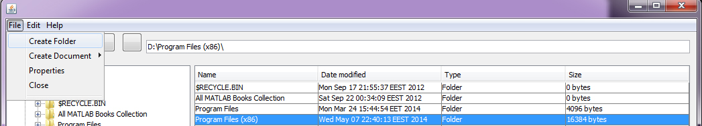
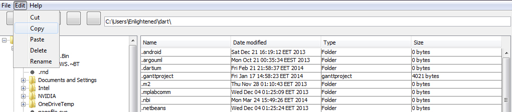
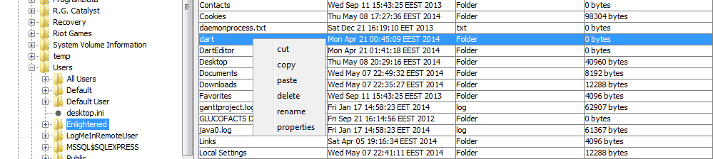
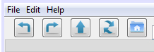
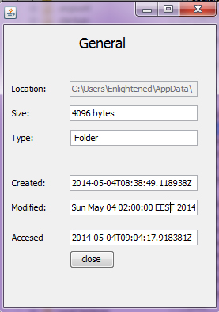

FAQ
This is a short list of our most frequently asked questions. For more information about File Manager, or if you need support, please visit the project's GitHub repository.
What is the File Manager?
File Manager is a lightweight & intuitive file browser application. We all use file browsers, especially the default one on Windows based machines, on a daily basis and we just felt we can do better than that. Our aim is to provide power users with a much more dynamic experience by offering a range of available new options.
How did the idea come about?
It was originally proposed as a semester-long project for a Software Engineering class at the Dept. of Computers Engineering in ATEI of Central Macedonia by Professor Nikolaos Petalides. It took us roughly 3 months of development to deliver the first release candidate version of the application. Agile development techniques, such as Extreme Programming, were adopted due to the (very) small size of the dev team!
What other Operating Systems are you compatible with?
Currently, the application will work on any Windows machine. We are actively developing the application for use on OSX & Linux based machines. We will provide regular updates on this one "soon(c)".
How do I create a new Folder/File?
You may create a Folder from the Top Menu File options as follows:

The Folder will be created at the Directory displayed in the Navigation bar, will be empty & flagged for rename.
At the moment, you may only create .txt files. There are plans to expand the Create New Document functionality by expanding the range of available file formats.
What sort of file edit options are there available?
You may Cut, Copy, Paste, Delete & Rename any File or Folder unless restrictions apply based on your user's status in the Operating System.
So how do I edit a selected file?
There are 2 ways to access the Edit options available to you. Firstly via the top menu:

or by left-clicking on the desired file which will pop up an Action Menu with the Edit options available:

What do the buttons on the Navigation Toolbar do?
Starting from the left, the first button will Undo your immediate previous action. The Redo button next to it, will restore that action should you first Undo it. The Up button will take you up one Directory. The Refresh button will force update all the contents of a folder. Finally the Home button will take you back to your Home directory.

How can I view File properties in a comprehensive manner?
The File Properties View. You can access this view either via the left-click Action Menu or via the Top Menu's File options. It provides detailed information on the folder/file in question:

I have a technical problem or support issue I need resolved, who do I email?
The best way to get in touch with us is to visit our Issues Center. Alternatively, you may email the developers directly @ alex@patsanis.gr or pan_tsilopoulos@hotmail.com
Is there an API or developer program?
Developers can register for our API at our developer site.